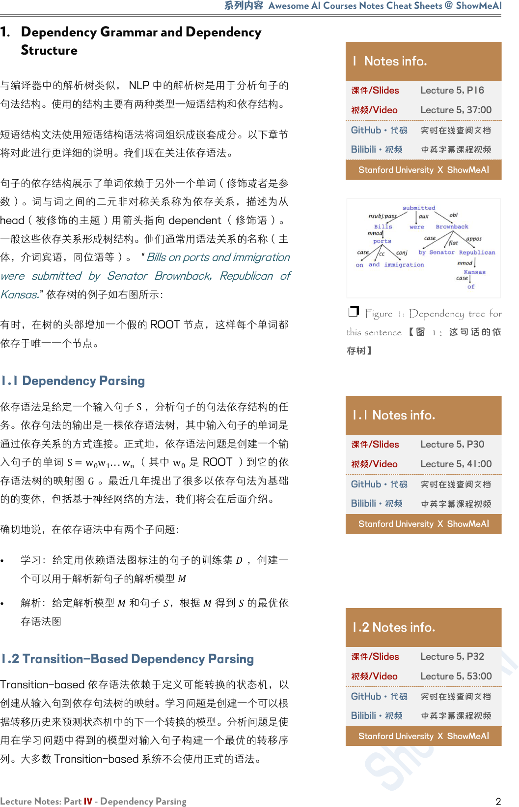
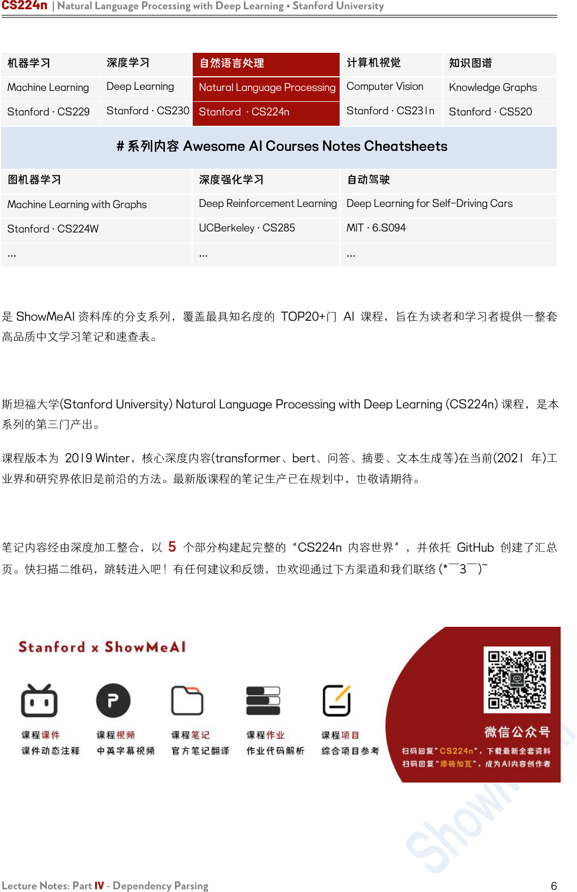

CS224n | Natural Language Processing with Deep Learning • Stanford University
Lecture Notes: Part IV - Dependency Parsing
1
Lecture Notes: Part IV
Dependency Parsing
CS224n 是顶级院校斯坦福出品的深度学习与自然语言处理方
向 专 业 课 程 ， 核 心 内 容 覆 盖 RNN 、 LSTM 、 CNN 、
transformer、bert、问答、摘要、文本生成、语言模型、阅读
理解等前沿内容。
笔记核心词：
Dependency Grammar, Dependency Structure, Neural
Dependency Parsing, 依存解析, 依存句法, 语法依赖
课程
全部资料和信息
已整理发布，扫描下方
任意
二维码，均可
获取！！
微信公众号·全套资料
回复 CS224n
底部菜单栏
Bilibili·课程视频
视频简介
置顶评论
GitHub·项目代码
阅读 ReadMe
点击超链接

系列内容
Awesome AI Courses Notes Cheat Sheets
@
ShowMeAI
Lecture Notes: Part IV - Dependency Parsing
2
1. Dependency Grammar and Dependency
Structure
与编译器中的解析树类似， NLP 中的解析树是用于分析句子的
句法结构。使用的结构主要有两种类型—短语结构和依存结构。
短语结构文法使用短语结构语法将词组织成嵌套成分。以下章节
将对此进行更详细的说明。我们现在关注依存语法。
句子的依存结构展示了单词依赖于另外一个单词（修饰或者是参
数）。词与词之间的二元非对称关系称为依存关系，描述为从
head（被修饰的主题）用箭头指向 dependent （修饰语）。
一般这些依存关系形成树结构。他们通常用语法关系的名称（主
体，介词宾语，同位语等）。“
Bills on ports and immigration
were submitted by Senator Brownback, Republican of
Kansas.
”依存树的例子如右图所示：
有时，在树的头部增加一个假的 ROOT 节点，这样每个单词都
依存于唯一一个节点。
1.1 Dependency Parsing
依存语法是给定一个输入句子
S
，分析句子的句法依存结构的任
务。依存句法的输出是一棵依存语法树，其中输入句子的单词是
通过依存关系的方式连接。正式地，依存语法问题是创建一个输
入句子的单词
S=
w
0
w
1
...
w
n
（其中 w
0
是 ROOT ）到它的依
存语法树的映射图
G
。最近几年提出了很多以依存句法为基础
的的变体，包括基于神经网络的方法，我们将会在后面介绍。
确切地说，在依存语法中有两个子问题：
•
学习：给定用依赖语法图标注的句子的训练集
，创建一
个可以用于解析新句子的解析模型
• 解析：给定解析模型
和句子
，根据
得到
的最优依
存语法图
1.2 Transition-Based Dependency Parsing
Transition-based 依存语法依赖于定义可能转换的状态机，以
创建从输入句到依存句法树的映射。学习问题是创建一个可以根
据转移历史来预测状态机中的下一个转换的模型。分析问题是使
用在学习问题中得到的模型对输入句子构建一个最优的转移序
列。大多数 Transition-based 系统不会使用正式的语法。
1 Notes info.
课件/Slides
Lecture 5, P16
视频/Video
Lecture 5, 37:00
GitHub·代码
实时在线查阅文档
Bilibili·视频
中英字幕课程视频
Stanford University X ShowMeA
I
❐ Figure 1: Dependency tree for
this sentence 【图 1： 这句话的 依
存树】
1.1 Notes info.
课件/Slides
Lecture 5, P30
视频/Video
Lecture 5, 41:00
GitHub·代码
实时在线查阅文档
Bilibili·视频
中英字幕课程视频
Stanford University X ShowMeAI
1.2 Notes info.
课件/Slides
Lecture 5, P32
视频/Video
Lecture 5, 53:00
GitHub·代码
实时在线查阅文档
Bilibili·视频
中英字幕课程视频
Stanford University X ShowMeAI

CS224n | Natural Language Processing with Deep Learning • Stanford University
Lecture Notes: Part IV - Dependency Parsing
3
1.3 Greedy Deterministic Transition-Based
Parsing
这个系统是由 Nivre 在 2003 年提出，与当时的常用方法截然不
同。
这个转换系统是一个状态机，它由状态和这些状态之间的转换组
成。该模型导出了从初始状态到几种终端状态之一的一系列转
换。
状态：对任意句子
S=
w
0
w
1
...
w
n
，一个状态可以描述为一个
三元组
c=(σ,β,A)
：
• 来自 S 的单词
w
i
的堆
σ
•
来自 S的单词 w
i
的缓冲区 β
•
一组形式为 (w
i
,r,
w
j
)的依存弧，其中 w
i
,
w
j
是来自
S
，和
r
描述依存关系。
因此，对于任意句子
=
0
1
...
• 一个形式为
([w
0
]
σ
,[w
1
...w
n
]
β
,⌀)
的初始状态
c
0
（现在只有
ROOT 在堆 σ中，没有被选择的单词都在缓冲区 β中。
•
一个形式为
(σ,[]
β
,A)的终点状态。
转移：在状态之间有三种不同类型的转移：
• SHIFT ：移除在缓冲区的第一个单词，然后将其放在堆的
顶部（前提条件：缓冲区不能为空）。
•
Left−Arc
r
： 向 依 存 弧 集 合 A 中 加 入 一 个 依 存
弧 (w
j
,r,
w
i
)，其中 w
i
是堆顶的第二个单词， w
j
是堆顶部
的单词。从栈中移除 w
i
（前提条件：堆必须包含两个单词
以及
w
i
不是 ROOT ）。
•
Rigℎt−Arc
r
： 向 依 存 弧 集 合 A 中 加 入 一 个 依 存 弧
(w
i
,r,
w
j
)，其中 w
i
是堆顶的第二个单词， w
j
是堆顶部的
单词。从栈中移除 w
j
（前提条件：堆必须包含 两 个单
词）。
下图给出了这三个转换的更正式的定义
1.3 Notes info.
课件/Slides
Lecture 5, P33
视频/Video
Lecture 5, 54:30
GitHub·代码
实时在线查阅文档
Bilibili·视频
中英字幕课程视频
Stanford University X ShowMeAI
❐ ← Figure 2: Transitions for
Dependency Parsing.【图 2：依赖
解析的转换】

系列内容
Awesome AI Courses Notes Cheat Sheets
@
ShowMeAI
Lecture Notes: Part IV - Dependency Parsing
4
1.4 Neural Dependency Parsing
虽然依赖项解析有很多深层模型，这部分特别侧重于贪心，基于
转移的神经网络依存语法解析器。与传统的基于特征的判别依存
语法解析器相比，神经网络依存语法解析器性能和效果更好。与
以前模型的主要区别在于这类模型依赖稠密而不是稀疏的特征表
示。
我们将要描述的模型采用上一部分中讲述的标准依存弧转换系
统。最终，模型的目标是预测从一些初始状态
c
到一个终点状态
的转换序列，对模型中的依存语法树进行编码的。由于模型是贪
心的，它基于从当前的状态
c=(σ,β,A)
提取特征，然后尝试一
次正确地预测一次转移
T∈{SHIFT,Left−Arc
r
,Rigℎt−Arc
r
}
。
回想一下， σ是栈，β是缓存, A是对于一个给定的句子的依赖
弧的集合
特征选择：根据该模型所需的复杂性，定义神经网络的输入是有
灵活性的。对给定句子 S的特征包含一些子集：
1.
：在堆 的顶部和缓冲区 的 中一些单词的词向量
（和它们的依存）。
2.
：在
中一些单词的词性标注（ POS ）。词性标注是
由一个离散集合组成：
={,,,,,...}
。
3.
：在
中一些单词的依存标签。依存标签是由一个依
存 关 系 的 离 散 集 合 组 成 ：
ℒ=
{,,,,,...}
。
对每种特征类型，我们都有一个对应的将特征的 one-hot 编码
映射到一个
d
维的稠密的向量表示的嵌入矩阵。
S
word
的完全嵌
入矩阵是
E
w
∈
ℝ
d×N
w
，其中
N
w
是字典/词汇表的大小。相应
地 ， POS 和 依 存 标 签 的 嵌 入 矩 阵 分 别 为 E
t
∈ℝ
d×N
t
和
E
l
∈
ℝ
d×N
l
，其中
N
t
和
N
l
分别为不同词性标注和依存标签的个
数 。 最 后 ， 定 义 从 每 组 特 征 中 选 出 的 元 素 的 数 量 分 别 为
n
word
,n
tag
,n
label
。
特征选择的例子：作为一个例子，考虑一下对 S
word
，S
tag
和
S
label
的选择：
1.
S
word
：在堆和缓冲区的前三个单词：
s
1
,s
2
,s
3
,b
1
,b
2
,b
3
。
栈顶部两个单词的第一个和第二个的 leftmost / rightmost
的子单词：
lc
1
(s
i
),rc
1
(s
i
),lc
2
(s
i
),rc
2
(s
i
),i=1,2
。栈顶部两
个 单 词 的 第 一 个 和 第 二 个 的 leftmost of leftmost /
rightmost of rightmost 的子单词：
1.4 Notes info.
课件/Slides
Lecture 5, P38
视频/Video
Lecture 5, 62:40
GitHub·代码
实时在线查阅文档
Bilibili·视频
中英字幕课程视频
Stanford University X ShowMeAI

CS224n | Natural Language Processing with Deep Learning • Stanford University
Lecture Notes: Part IV - Dependency Parsing
5
2.
lc
1
(l
c
1
(
s
i
)),r
c
1
(r
c
1
(
s
i
)),i=1,2。
S
word
总共含有
n
word
=18
个元素。
3.
S
tag
：相应的词性标注，则
S
tag
含有
n
tag
=18
个元素。
4.
S
label
：单词的对应的依存标签，不包括堆/缓冲区上的 6 个
单词，因此
S
label
含有
n
label
=12
个元素。
注意我们使用一个特殊的
NULL
表示不存在的元素：当堆和缓冲
区为空或者还没有指定依存关系时。对一个给定句子例子，我们
按照上述的方法选择单词，词性标注和依存标签，从嵌入矩阵
E
w
,
E
t
,
E
l
中提取它们对应的稠密的特征的表示，然后将这些向量
连接起来作为输入
[x
w
,x
t
,x
l
]
。在训练时间，我们反向传播到稠
密的向量表示，以及后面各层的参数。
前馈神经网络模型：这个神经网络包含一个输入层
[x
w
,x
t
,x
l
]
，
一个隐藏层，以及具有交叉熵损失函数的最终 softmax 层。我
们可以在隐藏层中定义单个权值矩阵，与
[x
w
,x
t
,x
l
]
进行运算，
我们可以使用三个权值矩阵
[W
1
w
,W
1
t
,W
1
l
]
，每个矩阵对应着相
应的输入类型，如下图所示。然后我们应用一个非线性函数并使
用一个额外的仿射层
[W
2
]
，使得对于可能的转移次数（输出维
度），有相同数量的 softmax 概率。
❐ Figure 3: The neural network
architecture for greedy, transition-
base dependency parsing.【 图 3：
贪婪的神经网络架构，转换基依赖
解析】
注意在上图中，使用的非线性函数是 ()=
3
。
有关 greedy transition-based 神经网络依存语法解析器的更
完 整 的 解 释 ， 请 参 考 论 文 ： A Fast and Accurate
Dependency Parser using Neural Networks。

CS224n | Natural Language Processing with Deep Learning • Stanford University
Lecture Notes: Part IV - Dependency Parsing
6
机器学习
深度学习
自然语言处理
计算机视觉
知识图谱
Machine Learning
Deep Learning
Natural Language Processing
Computer Vision
Knowledge Graphs
Stanford · CS229
Stanford · CS230
Stanford · CS224n
Stanford · CS231n
Stanford · CS520
# 系列内容 Awesome AI Courses Notes Cheatsheets
图机器学习
深度强化学习
自动驾驶
Machine Learning with Graphs
Deep Reinforcement Learning
Deep Learning for Self-Driving Cars
Stanford · CS224W
UCBerkeley · CS285
MIT · 6.S094
...
...
...
是 ShowMeAI 资料库的分支系列，覆盖最具知名度的 TOP20+门 AI 课程，旨在为读者和学习者提供一整套
高品质中文学习笔记和速查表。
斯坦福大学(Stanford University) Natural Language Processing with Deep Learning (CS224n) 课程，是本
系列的第三门产出。
课程版本为 2019 Winter，核心深度内容(transformer、bert、问答、摘要、文本生成等)在当前(2021 年)工
业界和研究界依旧是前沿的方法。最新版课程的笔记生产已在规划中，也敬请期待。
笔记内容经由深度加工整合，以 5 个部分构建起完整的“CS224n 内容世界”，并依托 GitHub 创建了汇总
页。快扫描二维码，跳转进入吧！有任何建议和反馈，也欢迎通过下方渠道和我们联络 (*￣3￣)~